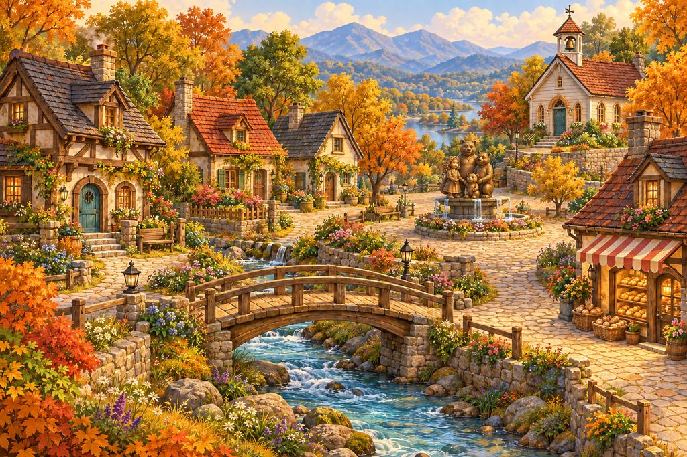

🐾 Your Day Can Start Anywhere
No objective has been assigned.
WELCOME TO
There’s a place for every bear.

Explore. Learn. Play. Follow a mystery. Visit somebody. Or do absolutely nothing.
THE BEAR COMMUNITY
There’s a place for every bear.
Cross the Welcome Bridge and discover a town built on belonging, learning, laughter, stories—and a few mysteries.
MAKE YOURSELF AT HOME
Cross the Welcome Bridge and begin wherever you want. There's a place for every bear.
TODAY IN HONEYBROOK
Choose a place to explore. Honeybrook Creek winds through town, joining neighborhoods, businesses, parks and stories by bridge.
THE RHYTHM OF THE DAY
Honeybrook is settling into its day.
AROUND THE VILLAGE
Click around the town. Follow the paths, visit a neighbor, and see what the town has waiting for you.
Connected Honeybrook • Major Completion Pass
Honeybrook now treats districts as connected places instead of isolated cards. Pick where you are, see what borders it, and keep wandering.
Major Completion Pass • Role-Play • Stories • Navigation • Comfort
Choose how you want the town to meet you today. Honeybrook can create a scene, point toward a story thread, help you roam, or leave you completely alone.
No objective has been assigned.
Settlement • Events • Mystery
Three connected systems move Honeybrook forward without turning the town into a checklist.
Living World • Connected Town
A faster bundled upgrade: town pulse, resident crossovers, and your personal Honeybrook memory in one place.
Your Honeybrook • Gentle Town Guide
Honeybrook can suggest a few places based on what you feel like today. You remain completely free to ignore us.
Create or update your Visitor Passport and Honeybrook can offer a few ideas.
Your Honeybrook • Visitor Passport
Create a simple visitor identity that remembers how you like to spend time here. No talent, career or destiny is required.
There's a place for every bear.
Create your visitor bear whenever you feel like it.
Explore • Learn • Play • Read
Your classrooms, stories, mysteries and games now have places in Honeybrook. Pick by mood—not by obligation.
Choose something above—or choose nothing. Both count as visiting.
Living World • Real Calendar
Honeybrook follows the real year. Seasons change, weekdays feel different from weekends, and town traditions arrive without demanding your participation.
Festival of Bridges • gardens reopen • creek walks • school projects move outdoors.
Harmony Festival • park evenings • outdoor music • pool days • food carts stay out later.
Honey Harvest Fair • Founders' Day • Three Bears Heritage Weekend • cool Bridgeview porch nights.
Welcome Home Week • warm café gatherings • library story nights • remembrance and community meals.
Town rule: An event happening does not create an obligation. You may attend, visit somewhere else, or just stay home.
Living Story • A Family Arrives
Meet Honeybrook through a family beginning a new chapter—not because they are broken, but because sometimes a family simply needs a different place to grow.
The Newberry family has just crossed the southern bridge. Nobody hands them a checklist. Toby Trailpaw pulls the Welcome Wagon alongside their vehicle and waves.
Living World • Enterable Places
Honeybrook is becoming more than destinations on a map. Step inside some of the town's anchor places and decide what you feel like doing there.
Somewhere in Honeybrook, a door is open.
Living World • Free Roam
No required route. Pick a place, wander somewhere else, or stay put. Honeybrook will meet you where you are.
Choose somewhere to visit. There is no wrong first stop.
Living World • Cause & Effect
Small moments can echo somewhere else later. No morality score—just a town with continuity.
Wally baked far too much again.
Nothing recorded yet.If you've met Harold, he can recognize you during a later delivery.
No delivery callback yet.A discovery in the Northern Woods can change what the library has to say.
The library is waiting for context.News travels through ordinary conversation—especially anywhere Miss Patty serves coffee.
Miss Patty is carrying on with her day.Living World • Relationship Memory
Honeybrook remembers ordinary introductions and repeat visits. Friendship is not a score to grind—it is simply continuity.
See whether you've met and what a return visit feels like.
Living World • Everyday Encounters
Small moments happen because residents share a town—not because every conversation needs to become a mission.
Press the button to catch an ordinary Honeybrook moment.
Living World • Resident Routines
Residents now have places they are likely to be at different times of day. Pick a bear to see today's routine and current encounter.
Honeybrook bears don't stand in one spot all day waiting for a visitor to click them.
Harold is sorting the morning mail.
Living World System • Town Time
Explore in real local time, or preview Honeybrook during another part of the day.
Honeybrook is waking up.
Residents are beginning their routines.
The public trail looks different as the light changes.
Discovery Zone • Northern Woods
The woods do not announce what they are. They simply become older, stranger, and less interested in matching Honeybrook's maps.
Boundary Scene • Northern Edge
Honeybrook's maintained trail ends here. Beyond it, the official map becomes incomplete.
Town Scene • Southern Entrance
This is the first ordinary road into town—and the first promise Honeybrook makes to a newcomer.
District Scene • Faith & Reflection
A quieter corner of Honeybrook for worship, reflection, remembrance, service and stillness.
District Scene • Honeybrook Outskirts
The roads widen, the buildings thin out, and Honeybrook becomes fields, orchards, barns, old bridges and working country homes.
District Scene • Community Park
Walk, play, picnic, fish, eat something from a cart—or find a tree and mind your bear-ness.
District Scene • Entertainment & Play
Games, movies, skating, bowling, swimming, sports—and absolutely no requirement to turn recreation into self-improvement.
District Scene • Care & Community
Some bears need treatment. Some need information. Some need a meal, a room, a ride—or simply somebody who doesn't ask them to prove they deserve help.
District Scene • Harmony Hill
Make something, perform something, learn something—or sit on the grass and enjoy the show.
District Scene • Scholars’ Quarter
Nobody ages out of learning in Honeybrook—and nobody has to learn exactly like the bear beside them.
District Scene • Civic Heart
History, town business, festivals, markets—and four figures whose story may be older than Honeybrook itself.
District Scene • Main Street
Shopping, errands, food, business—and information you definitely did not come here to hear.
District Scene • Bridgeview
The neighborhood that raised Honeybrook. Pull up a paw.
YOUR LIFE IN HONEYBROOK
Lessons, stories, games, practice labs, and creative activities now have homes inside the town.
YOUR LIFE IN HONEYBROOK
Observe the town, frame a scene as Narrator, or step into a resident's paws.
YOUR LIFE IN HONEYBROOK
Ordinary days can produce little situations, community moments, and—occasionally—something worth investigating.